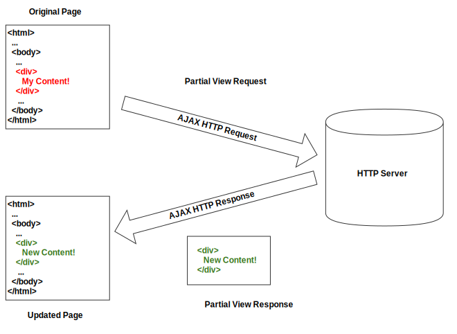

<div class="container">

  <div class="row">
    <div class="col-md-12">

      <section>
        <h2>Why Use Intercooler?</h2>

        <p>In a word: <strong><em>simplicity</em></strong>.</p>

        <p>With intercooler you can add AJAX to your application without using client-side models, routing, validation,
          rendering, factories or dependency injection.</p>

        <p>In fact, you don't need to write any javascript at all.</p>

        <h2>How Does That Work?</h2>

        <p>Intercooler is a natural extension of HTML: simple attributes with a familiar syntax are all that is
          required to add AJAX requests to your application.</p>

        <p>Intercooler does use javascript to communicate with a server, but the events triggering the requests are
          described with HTML attributes (or are simply implied) rather than with imperative javascript.</p>

        <p>Rather than expecting a JSON response from the server, intercooler expects HTML. This HTML is then loaded
          into the DOM directly.</p>

        <p>This is in contrast with Javascript MVC frameworks such as <a href="http://emberjs.com/">Ember.js</a> or
          <a href="http://angularjs.org/">Angular.js</a>, which typically use JSON as a data transport and have much
          more involved client-side binding and rendering.</p>

        <p>Below is a diagram showing an intercooler request:</p>

        <p class="text-center">
          
        </p>

        <p>The AJAX response is a bit of HTML generated by the server, which is swapped into the DOM in place of the
          existing
          content.</p>

        <p>This technique is fast and <em>simple</em>.</p>

        <p>Intercooler was inspired by <a href="https://github.com/rails/turbolinks">Turbolinks</a> and, particularly,
          by the
          excellent <a href="https://github.com/defunkt/jquery-pjax">pjax</a> library.</p>

        <h2>The Zen of Intercooler</h2>

        <p><em>"The minimum complexity compatible with user joy."</em></p>

      </section>
    </div>
  </div>

</div>